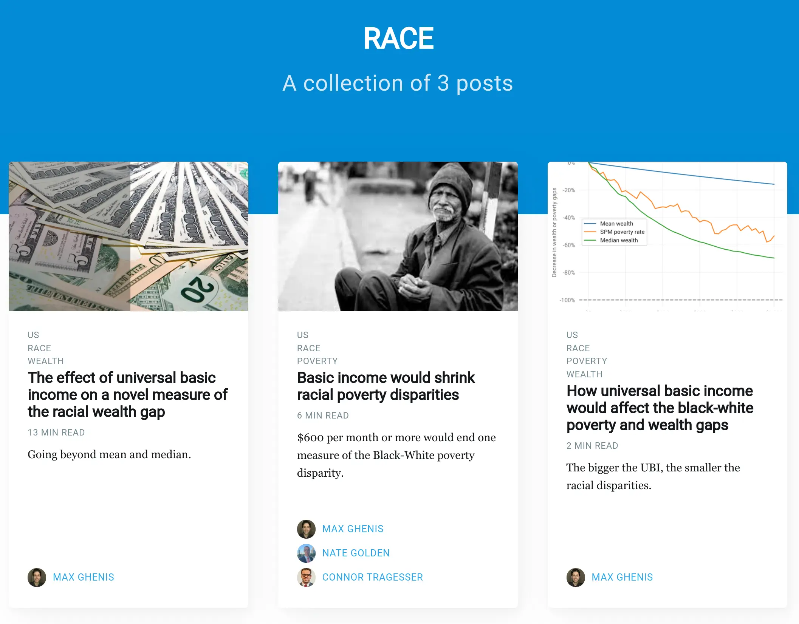

Welcome to our new open-source website
The UBI Center’s mission is to produce open-source research that informs a robust policy debate around universal basic income. We emphasize “open-source” because we believe that the public deserves full transparency into research that influences economic policy, and because we know that feedback and contributions improve our work, whether or not it comes from our staff. As our friends at the Policy Simulation Library say, “Open Models == Better Policy.”
The UBI Center has been dedicated to open-source research since its inception. In our first studies of Andrew Yang’s Freedom Dividend, we just cited Jupyter notebooks stored on GitHub. Later, we moved to the Jupyter Book platform for our blog and child allowance website; we published Jupyter notebooks directly as webpages using GitHub Pages and GitHub Actions. We’ve also been developing open-source software with the Policy Simulation Library like openfisca-uk, a microsimulation model of the UK tax and benefit system, and microdf, a data analysis package for weighted survey microdata.
This week, we’re taking the open-source part of our mission to a new level: we’re re-launching ubicenter.org as a new website hosted entirely on GitHub. We’ve moved all our posts from Medium and blog.ubicenter.org (which was hosted with JupyterBook) to the format you’re seeing here, as well as content from our old Google Sites website. We’re using the Jekyll blogging platform, the Jasper2 theme (based on Ghost’s Casper theme), GitHub Pages, and GitHub Actions, plus a utility we built for turning Jupyter notebooks into Markdown files with interactive graphics. All the code is at github.com/ubicenter/ubicenter.org.
Beyond the advantages of open-source, our new website provides a cleaner look, more immediate access to our new research, a unified view of our projects, and organization by author and topic. For example, you can see all our research on UBI and race at ubicenter.org/tag/race.

And just like our previous JupyterBook sites like blog.ubicenter.org, we still have interactive visualizations and a toggle to see the Python code that generates them, like this chart from our Women’s Day 2021 post:
We have much more to do, as we’ve listed on github.com/UBICenter/ubicenter.org/issues. From completing the migration from JupyterBook to adding a search bar to embedding our Twitter feed, we’re prioritizing openness in our future development. If you see something off, or if there’s something you’d like to see, feel free to submit an issue. And if you’d like to contribute, check out our open research assistantships and internships.
Subscribe to the UBI Center
Get the latest posts delivered right to your inbox